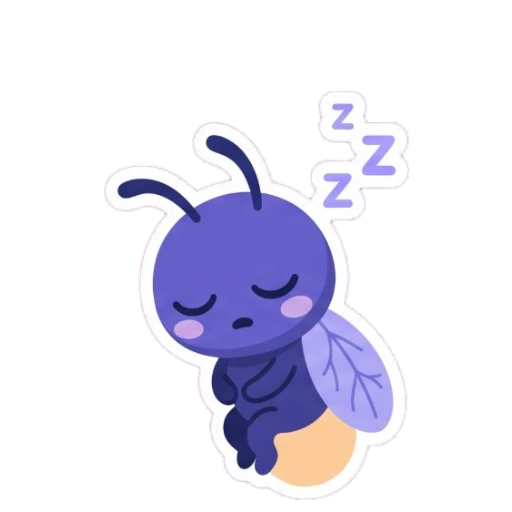

Uyqu xotirani mustahkamlaydi
Uxlayotganingizda miya oʻrganish va eslab qolish uchun kerakli yoʻllarni quradi.
Mavzu
“Uyqu” mavzusidagi faktlar — har biri tekshirilgan manba bilan.

Yuklanmoqda…
Uxlayotganingizda miya oʻrganish va eslab qolish uchun kerakli yoʻllarni quradi.
Har kecha siz yengil uyqu, chuqur uyqu va tush koʻriladigan (REM) uyqudan bir necha marta oʻtasiz.
6–12 yoshli bolalarga kuniga 9–12 soat, oʻsmirlarga esa 8–10 soat uyqu kerak.
Sichqonlarda oʻtkazilgan tadqiqotda miya uyqu paytida chiqindilarni tezroq tozalagan.
Miyaning kichik bir qismi koʻzdan kelgan yorugʻlik orqali uyqu va uygʻonish vaqtini belgilaydi.
Oʻsmirlarda uyqu gormoni melatonin kechqurun kechroq koʻtariladi, shuning uchun kech uyqu kelishi tabiiy.
NHS uxlashdan bir soat oldin telefon, planshet va kompyuterdan foydalanmaslikni maslahat beradi.
Odam vaqtining taxminan uchdan bir qismini uxlab oʻtkazadi — va bu vaqt behuda emas.
Miyada adenozin degan modda uyquni keltiradi, kofein esa uning taʼsirini toʻsib qoʻyadi.
Qancha uzoq bedor boʻlsangiz, tanangiz shuncha kuchliroq uyqu talab qiladi.
REM uyqusida qoʻl va oyoq mushaklari vaqtincha harakatsiz boʻladi, shuning uchun tushdagi harakatlarni bajarmaymiz.
Hamma tush koʻradi — har kecha taxminan ikki soat, garchi koʻpini eslay olmasak ham.
Uxlab qolganingizdan taxminan bir yarim soat oʻtib, koʻzlar tez harakatlanadigan REM uyqusi boshlanadi.
Uyquda talamus tashqi dunyoni «oʻchiradi», REM uyqusida esa poʻstloqqa tush uchun tasvir va tovushlar yuboradi.
Koʻzi ojiz odamlarning aksariyati uyqu-bedorlik maromini sozlash uchun yorugʻlikni maʼlum darajada sezadi.
Hissiyotlar bilan ishlaydigan bodomsimon tana REM uyqusida tobora faollashadi.
Uxlayotganingizda baʼzi immun hujayralar koʻproq ishlaydi, shuning uchun kam uxlash shamollashni osonlashtirishi mumkin.
Yaxshi uxlamasangiz, ochlikni boshqaradigan gormonlar oshadi va shirin, yogʻli, shoʻr ovqat koʻproq yeyiladi.